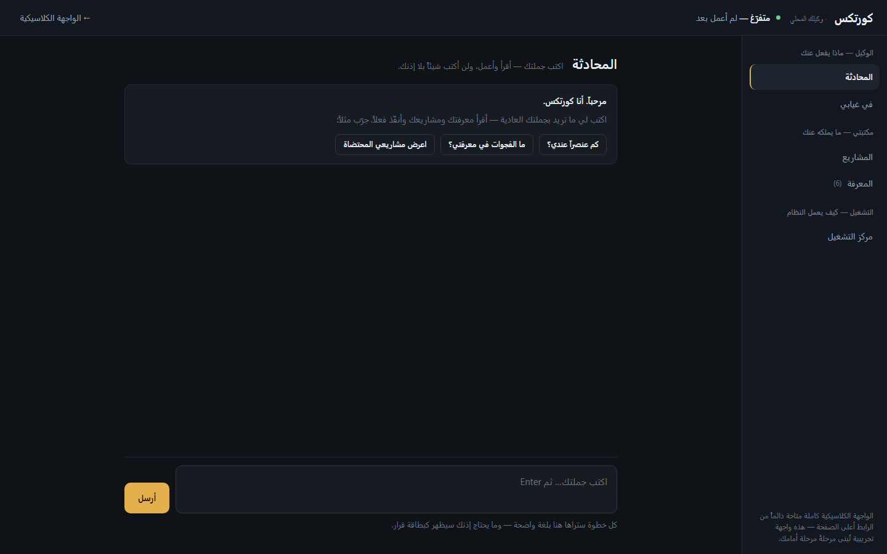
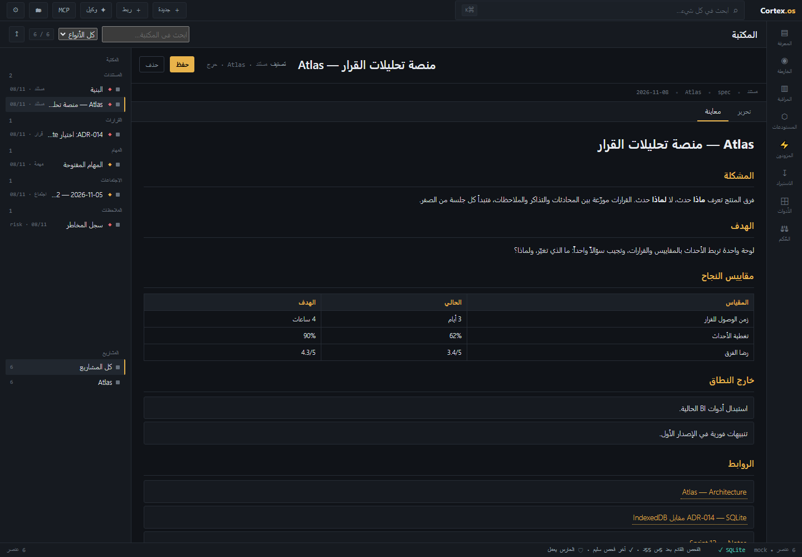
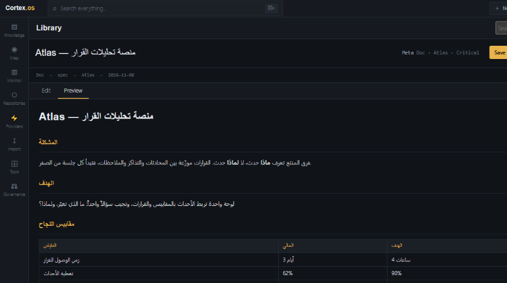

معرفة موزّعةKnowledge, scattered
PRD في مستند، قرار في محادثة، مهمة في تذكرة. لا شيء يربطها.The PRD in a doc, the decision in a chat, the task in a ticket. Nothing links them.
كورتكس يحوّل ملاحظاتك وقراراتك ومهامك إلى ذاكرة منظّمة محلية. يقرأها وكيلك، يستشهد بمصادرها، ويعمل عليها — بإذنك. Cortex turns your notes, decisions, and tasks into a structured local memory. Your agent reads it, cites its sources, and acts on it — with your permission.

الواجهة العربية — بيانات Atlas التجريبية. The Arabic interface — fictional Atlas data.
01المشكلةThe problem
الملاحظات نصّ. والقرارات سياق. والوكيل يبدأ كل جلسة من الصفر — لأن الذاكرة ليست في مكان يفهمه. Notes are text. Decisions are context. And every agent session starts from zero — because the memory isn't somewhere it can read.
PRD في مستند، قرار في محادثة، مهمة في تذكرة. لا شيء يربطها.The PRD in a doc, the decision in a chat, the task in a ticket. Nothing links them.
الملاحظة لا تعرف نوعها ولا مشروعها ولا علاقاتها، فلا يمكن الاستعلام عنها.A note doesn't know its type, project, or relations — so it can't be queried.
كل جلسة تعيد قراءة المشروع كله، أو تخمّن. لا مصادر، ولا مسار عمل.Every session re-reads the whole project, or guesses. No sources, no trail.
02أربع طبقاتFour layers
كل طبقة تعمل وحدها، وتُغني التي بعدها. لا قفل على صيغة، ولا سحابة في المنتصف. Each layer works on its own — and makes the next one better. No format lock-in, no cloud in the middle.
خزنة Markdown محلية، ومرآة SQLite منظّمة، وسياق مرتبط لكل مستند.A local Markdown vault, a structured SQLite mirror, and linked context for every document.
استرجاع هجين، كشف تناقضات وفجوات، ودرجة صحة لكل مشروع.Hybrid retrieval, contradiction and gap detection, and a health score per project.
الوكيل الداخلي يملك 48 أداة (معرفة، ملفات، مستودع، git، تنفيذ، استيراد)، و28 أداة MCP تعرّض الذاكرة للوكلاء الخارجيين — احتضان المشروع، قاطع السياق، ومسار وكيل دائم.The built-in agent has 48 tools (knowledge, files, repo, git, execution, import), and 28 MCP tools expose the memory to external agents — project absorption, context slicing, and a durable agent trail.
لقطات تاريخ، نسخ ZIP، ملاحظات حيّة، وجلسات تنجو من إعادة السياق.History snapshots, ZIP backups, living notes, and sessions that survive context resets.
03المحرّرThe editor
كل مستند يعرف نوعه ومشروعه وعلاقاته. حرّر، عاين، تنقّل، وارجع لأي لقطة. Every document knows its type, project, and relations. Edit, preview, navigate, and restore any snapshot.

لقطة من واجهة كورتكس — مشروع Atlas التجريبي. A capture of the Cortex interface — the fictional Atlas project.
04ذاكرة المشروعProject memory
أربع أدوات تجعل وكيل البناء يعمل من خريطة المشروع، لا من قراءة كل ملف في كل مرة. خرائط لا نسخ — ومسار لا يضيع مع السياق. Four tools let a coding agent work from the project map, not from re-reading every file. Maps, not copies — and a trail that survives context resets.
يمسح المصدر مرة واحدة: أهم الملفات بدرجة الاعتماد، نقاط الدخول، وحواف الاستيراد الفعلية.Scans the source once: key files by dependency degree, entry points, and real import edges.
قبل أي تعديل: الملف الهدف، ما يعتمد عليه، ما يعتمد عليه، والملفات المتأثرة — مسارات وتلخيص، لا محتوى كامل.Before any edit: the target file, its dependencies, dependents, and affected files — paths and a summary, not full contents.
بعد كل خطوة: سجل دائم لما جرى، مع الملفات التي مُسّت.After every step: a durable record of what happened, with the files touched.
عند الاستئناف: أين توقّف العمل، منك ومن الوكلاء الآخرين، الأحدث أولاً.On resume: where work stopped — yours and other agents' — newest first.
memory_slice {
project: "rent-app",
file: "src/billing.js",
query: "add discount to invoice"
}
→ target: src/billing.js
depends on (3): db.js, money.js, invoice.js
depended on by (5): routes/pay.js, routes/admin.js, test/billing.test.js
warning: editing touches 5 files05الوكيلThe agent
الوكيل يقرأ من الذاكرة، يذكر ما استند إليه، ويكشف ما يتعارض. وإن لم يجد، يقول ذلك. The agent reads from memory, cites what it used, and flags what conflicts. If it can't find it, it says so.
اخترنا SQLite + WAL مع Parquet للأرشيف البارد. القرار موثّق في ADR-014 واعتُمد في Sprint 12 بعد قياس p95 على 5 ملايين حدث. We chose SQLite + WAL with Parquet for the cold archive. It is documented in ADR-014 and approved in Sprint 12 after measuring p95 on 5M events.
شكل الإجابة: نصّ + مصادر قابلة للتتبّع. The answer shape: prose + traceable sources.
06بروتوكول MCPMCP
كورتكس يقدّم ذاكرته كخادم MCP عبر stdio أو HTTP. عرّفه مرة، وكل وكيل يقرأ ويكتب في نفس الذاكرة. أما وكيل كورتكس الداخلي فيعمل بـ48 أداة (ملفات، مستودع، git، تنفيذ، استيراد) تحت جدول صلاحيات حتمي. Cortex exposes its memory as an MCP server over stdio or HTTP. Define it once, and every agent reads and writes the same memory. Its own agent works with 48 tools (files, repo, git, execution, import) behind a deterministic permission table.
claude mcp add cortex -- node "C:\path\to\cortex\mcp-memory-server.js" \
--root "C:\path\to\cortex"{
"mcpServers": {
"cortex": {
"command": "node",
"args": [
"C:\\path\\to\\cortex\\mcp-memory-server.js",
"--root", "C:\\path\\to\\cortex"
],
"env": { "CORTEX_ALLOWED_ROOTS": "E:\\projects" }
}
}
}# Remote MCP — any runtime that speaks MCP over HTTP
http://127.0.0.1:3737/mcpبحث، قراءة، كتابة، إحصاءات، تصنيف، استخراج، تناقضات، فجوات، حالة مشروع.Search, read, write, stats, classify, extract, contradictions, gaps, project state.
memory_search
جلسة، رسالة، مراجعة سياق، أفضل إجراء تالٍ، ملاحظة حيّة.Session, message, context review, next best action, living note.
agent_start_session
احتضان، قاطع سياق، تسجيل، مسار.Absorb, slice, record, trail.
memory_slice
07كيف يعملHow it works
npm start — خادم محلي على 3737. بلا تثبيت تبعيات.npm start — a local server on 3737. No dependency install.
خزنة Markdown جديدة أو استيراد ملفاتك ومشاريعك.A new Markdown vault, or import your files and projects.
markdown + sqliteOllama محلي أو أي واجهة OpenAI-compatible.Local Ollama or any OpenAI-compatible endpoint.
openai-compatibleMCP عبر stdio أو 127.0.0.1:3737/mcp.MCP over stdio or 127.0.0.1:3737/mcp.
08ثنائي اللغةBilingual
الواجهة كلها تنقلب مع اللغة: الاتجاه، القاموس، والنصوص الديناميكية. حجم الخط S/M/L/XL ولون التمييز يُحفظان محلياً. The whole interface flips with the language: direction, dictionary, and dynamic strings. Font size S/M/L/XL and accent color are saved locally.
اتجاه كامل + Placeholders + dir=auto للمحتوى.
Full direction + placeholders + dir=auto for content.
واجهة إنجليزية بالكامل، والمحتوى العربي يبقى RTL داخل المحرّر بفضل dir=auto. لا نسخة ثانية من المنتج.
A fully English UI while Arabic content stays RTL inside the editor thanks to dir=auto. No second build of the product.

09الأمانSecurity
لا سحابة، ولا multi-tenant، ولا ادعاءات زائدة. هذه حماية بما يفعله النظام فعلاً. No cloud, no multi-tenancy, no inflated claims. This is protection based on what the system actually does.
يرفض الربط على الشبكة إلا بتجاوز صريح CORTEX_ALLOW_REMOTE=1.Refuses network binding unless you explicitly set CORTEX_ALLOW_REMOTE=1.
ترويسة X-Cortex-Session + فحص CSRF للأصل المحلي.X-Cortex-Session header + same-origin CSRF checks.
مفاتيح المزوّدين مشفّرة على القرص، مقنّعة في الردود، والحمولات تُفحص قبل الإرسال.Provider keys are encrypted at rest, masked in responses, and payloads are scanned before sending.
الحذف محظور بمُشغِّل؛ كل إجراء يُسجَّل.Deletion is blocked by a trigger; every action is logged.
CSP بلا مصادر بعيدة، منع التأطير، nosniff، وesc() لكل إخراج.CSP with no remote sources, frame denial, nosniff, and esc() on every output.
10التشغيلRun
Node ≥ 22.5 فقط. لا npm install، ولا قاعدة بيانات خارجية.
Node ≥ 22.5 only. No npm install, no external database.
cd cortex-v5-brain-layer/obsimem-web
npm start
http://127.0.0.1:3737
npm run desktop:native
npm run dev. للاختبارات: npm test.
For live reload: npm run dev. For tests: npm test.
11الأسئلةFAQ
npm start مباشرة. Electron اختياري لنافذة سطح المكتب.No. Node ≥ 22.5 only; run npm start. Electron is optional for the desktop window.APP_ROOT). لا سحابة ولا مزامنة خارجية افتراضياً.A Markdown vault + SQLite database inside the project folder (or APP_ROOT). No cloud, no external sync by default.شغّله على جهازك، وابدأ بملاحظة واحدة.Run it on your machine and start with one note.